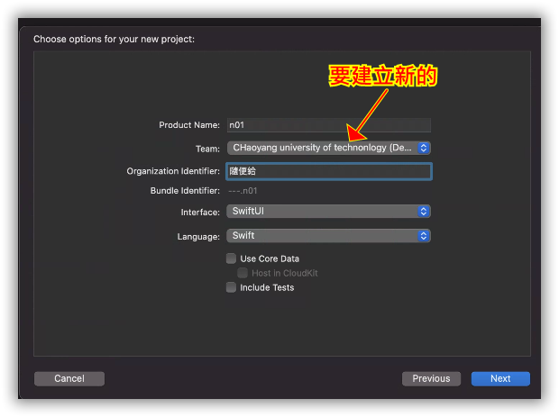
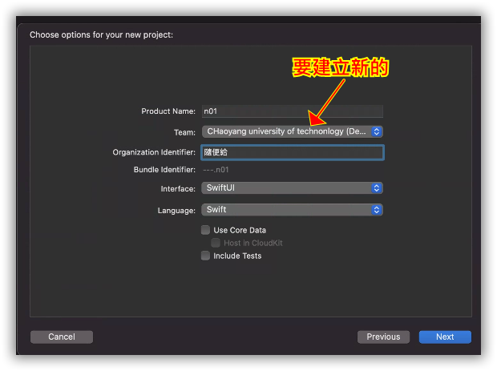

上課相關規定
本學期課程主要是在MAC環境中學習使用Swift語言製作iOS App
上課方式是以一個行動商務實例，一面開發一面講解開發中會用到的Swift語言和App的製作技術。
上課方式
兩個人一組，所以一些作業和分數是以分組分數來計算，開學第二週加退選完成後，上課時完成tronclass分組。
強烈建議要找時間上能相互配合做課後指定作業的同學，以免無法完成指定作業被扣分數。
雷區 VS. 安全區域
- 雷區
- 想靠組員的努力，自己可以不用做什麼就拿到學分。 1+1＜2 。
- 打算單打獨鬥，自己帶Macbook Air做自己的，完全不和組員互動。 ① + ① 絕對小於2
- 另一位組員很認真，自己猛滑手機，偶爾或完全不看他在弄什麼。 1+0.3＜1.3，你在拖累他。
- 沒有1/3缺席扣考規定，出席分數佔比又不高，打算低空掠過，你礙了他。1+0＜1
- 只想要混學分，對課程不感興趣，課程其實份量不輕，沒興趣很難撐下去，不少同學期中就退選了。 0+0=退選
-
安全區域
- 兩人一組相互協助，操作時一直討論，非常吵。 1+1會遠大於2。
- 對iOS App很有興趣，打算當作以後可能發展的專長之一。1+1>2。
- 原本程式能力不足，雖然學過python、java等等，但是覺得沒學好，
很想再試一下。0.5+0.5>2 - 沒有iPhone或者iPad；沒上過Android App課程；只會python，但是java完全不會；連python也沒什麼信心；熱血不怕爆肝。 0.1+0.1>2。
給分方式
-
平時作業:15% A=平均*0.15
是上課時的練習，和出席綁在一起，沒出席就沒有該週平時作業分數。
-
課堂參與與出席:10% B=(出席次數/點名次數)*0.1
分母是點名次數，一個學期如果點3次，分母就是3，如果每週都點2次，18週分母就是36。 -
學習態度:10% C=主觀分數*0.1
上課同學並不多，我可以確實知道每個學習態度是否積極，我會給一個整體印象分數。 -
小考:15% D=平均*0.15
小考包括課堂小考和回家實作的作業 -
期中專案:20% E=分數*0.2
期中專案實施方式也有可能視上課學習狀態改以以考試方式進行。 -
期末專案:30% F=分數*0.3
期末專案給分有不同起點分數:由高至低包括- 90:畢業專題中會用到的專案(完成度不用100%)
- 85:從0開始的專案(強調原創，完成度不用100%)
- 80:去github修改後專案(能夠看懂別人的原始碼做出修改)
- 50:上課的範例專案做適當修改(每位同學原本基礎不同，這是給同學一個安下心盡力學習的選擇)
- 0:直接繳交上課範例無任何修改(如果覺得分數很夠了，就試試看搞不好剛好過了)
未必起點分數高的最後期末專案分數一定會高於起點分數低的。
1.開發 iOS APP 需要準備什麼?


有模擬器可以測試

2 MAC作業系統基本操作
快捷組合鍵
如果你用的是MAC+MAC鍵盤，,那麼基本上就是
⌘鍵 對應到pc鍵盤的ctrl鍵， 例如，ctrl-C就是⌘-C
但是因為教室是MAC配PC鍵盤，沒有⌘鍵
所以可以用視窗鍵代替
因為pc鍵盤的視窗鍵就是⌘， 所以⌘-C就是視窗鍵-C
但是pc鍵盤型號太多，常常又不一定
有時候⌘-C是ctrl-C
所以在教室內，如果快捷鍵要按⌘， 那就視窗鍵和ctrl都試試看
，例如⌘ + C 就ctrl+c 和 視窗鍵+c 都試試看。
- ⌘ + C 複製（拷貝）
- ⌘ + X 剪切
- ⌘ + V 粘貼
- ⌘ + A 全選
- ⌘ + delete 刪除
- ⌘ + S 保存
- ⌘ + N 新建
- ⌘ + 空格鍵切換輸入法
- caps lock鍵 切換中英文輸入法==win10的shift鍵
- ⌘+shift+4 截圖
Mac操作環境介紹

全螢幕空間切換

3 建立APPLE ID，使用自己的APPLE ID建立MAC帳號和環境
建立Apple ID
如果兩人一組已經有人有了，可以用現成的
在Mac建立帳號和環境

4 練習去Apple store安裝壓縮軟體
練習安裝軟體
打開apple store，搜尋7z，如圖上所示都可以，任選一個安裝

搜尋bear安裝 熊掌記
5 熟悉Xcode環境簡介
打開ＸＣＯＤＥ新增專案

 

設定ＡＰＰ的ＩＯＳ版本

設定team 開發團隊 選擇模擬器版本 並且執行

6 使用模擬器嘗試hello程式
拉元件

點開輔助視窗 開啟程式ViewController.swift，這樣變成兩個螢幕，
左邊是視覺畫面，右邊是程式碼

讓標籤和文字輸入格這兩個視覺元件和程式產生關聯，
使得標籤和文字輸入格在程式中各對應一個變數，才能用程式驅使元件
這邊我產生了兩行
@IBOutlet weak var lab : UILabel!
@IBOutlet weak var te: UITextField!
標籤的變數是lab
文字輸入格的變數是te

在按鈕按下後，去執行一段程式
這個叫做事件處理程式
touch-up-inside是我們要利用的事件，
touch- 手指接觸到手機螢幕
up- 手指離開螢幕時
inside- 離開時手指要在按鈕範圍內
的動作讓標籤和文字輸入格這兩個視覺元件和程式產生關聯，
使得標籤和文字輸入格在程式中各對應一個變數，才能用程式驅使元件

程式碼如下:

7.學習SwiftUI還是UIKit?
學習SwiftUI還是UIKit?
SwiftUI是一個很好的用戶界面框架，並且絕對會成為Apple平台上應用程序開發的未來。 但是，如果您想今天（或未來一到兩年左右的任何時間）構建出色的應用App， 那麼您也絕對需要用到UIKit，理由是什麼呢?
限制版本
SwiftUI在WWDC2019上宣布，可在iOS 13設備或更高版本中使用。所以：- 迄今為止，幾乎所有編寫的應用程序都使用UIKit。
- 一年或更長時間內，任何需要支持iOS 12和iOS 11甚至都無法使用SwiftUI。
這意味著，如果您打算在未來三年內找到一份iOS開發人員的工作，則UIKit經驗實際上是必不可少的，因為這是現有環境中的工具，公司不會任意改變。 實際上，我完全希望UIKit在四年後仍將是主導的UI平台。我想沒有人-甚至沒有蘋果！–希望iOS社區能夠以任何快速的步伐遷移到SwiftUI。 這些公司已經在UIKit的app應用程序中累積大量的程式庫，投入大量的時間和資金，馬上要換是不可能的。 前幾年從Object-C切換到Swift非常的成功。 所以或許也會想著SiwftUI也會這樣瞬間產生大轉變。但是Swift替換Object-C和SwiftUI替換UIkit是完全不一樣的難度。 改採用Swift的速度很快，因為它可以在Apple支持的每個框架（UIKit，SpriteKit等）中工作，並且還向舊版支援，因此許多公司可以立即切換到它。 而SwiftUI會成為蘋果平台開發的未來，但是要讓大家捨棄UIKit將需要不算短的時間。
有限的資源
UIKit已有十多年的歷史了，這意味著幾乎你可能遇到的每個問題都已經被他人解決，並且有許多人提供功能很強的程式讓你下載使用。 所以使用Google，Stack Overflow等都可以找到問題的解決方案。 當你卡住時，常常只要把錯誤消息貼到網站中，馬上就有一堆解答，但SwiftUI才開始而已，可用的解決方案少得多。 而且很可能妳是第一個用德這個問題的人。 這可能會很有趣，你可以去搞出解答，讓別人獲益並崇拜你，但也可能你正爆肝數日中，希望能有現成解答。
所以……不要學SwiftUI嗎？
沒有！SwiftUI非常有趣，您可以用它來構建奇妙的東西。 SwiftUI的存在並沒有以某種方式使UIKit變得過時：如果您打算在未來三年內獲得iOS開發工作， 那麼知道如何使用UIKit將會是一項必要的技能。 因此你是需要學SwiftUI，因為這是在蘋果平台上進行應用程序開發的未來， 但是您仍然需要學習UIKit，因為這些技能在未來幾年中將非常有用。 隨著每年的過去，隨著SwiftUI的實力，採用和支持的增長，以及隨著SwiftUI的增長，UIKit將開始縮小， 上面列出的所有三個問題都將得到減少。但是，至少到目前為止，您確實確實需要兩者。 所以上課還是上UIkit，學完就會有能力去自學UIkit，如果上課上SwiftUI，卡到你不要不要的，期中就辦退選了。
8 把剛剛建立帳號和環境移除
把剛剛建立帳號和環境移除在第二週分組之後，這台機器未必是這學期要使用機器，請先刪除帳號。

9 問題和練習